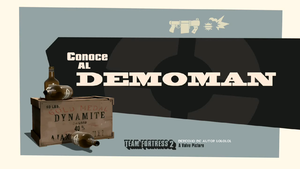

demoman
- icono:
- tipo: defensa
- salud: 175/
 260
260 - velocidad: 93%
meet the demoman
El Demoman, es un bebedor de whisky experto en demoliciones procedente del norte de Escocia, uno de los miembros más versátiles del equipo. A pesar de no contar con armas precisas a largo alcance, el Demoman tiene un arsenal potente e impredecible que puede manipular a su provecho. Es un maestro con los explosivos, excelente en combate indirecto y a medio alcance. Armado con su Lanzagranadas y Lanzabombas Lapa, el Demoman usa su único ojo bueno y su conocimiento del entorno para mandar volando a los enemigos al cielo, normalmente en pedacitos. Además de ser un experto con los explosivos, es realmente poderoso en combate cuerpo a cuerpo, siendo la clase del juego con mayor variedad de armas cuerpo a cuerpo desbloqueables. El Demoman puede destruir construcciones rápidamente; puede disparar sus granadas en distintos ángulos para destruir Armas Centinela con seguridad. Las bombas lapa son la herramienta perfecta para la limpieza de terreno, y son muy efectivas para atacar a los enemigos que estén cerca de las vagonetas, puntos de control y dossieres. Este tiene uno de los mejores arsenales de armas blancas como espadas con largo alcance y mucho poder destructivo que podría matar a un Scout con un solo limazo. El Demoman está doblado por Gary Schwartz (Francesc Rocamora en la versión Española).z